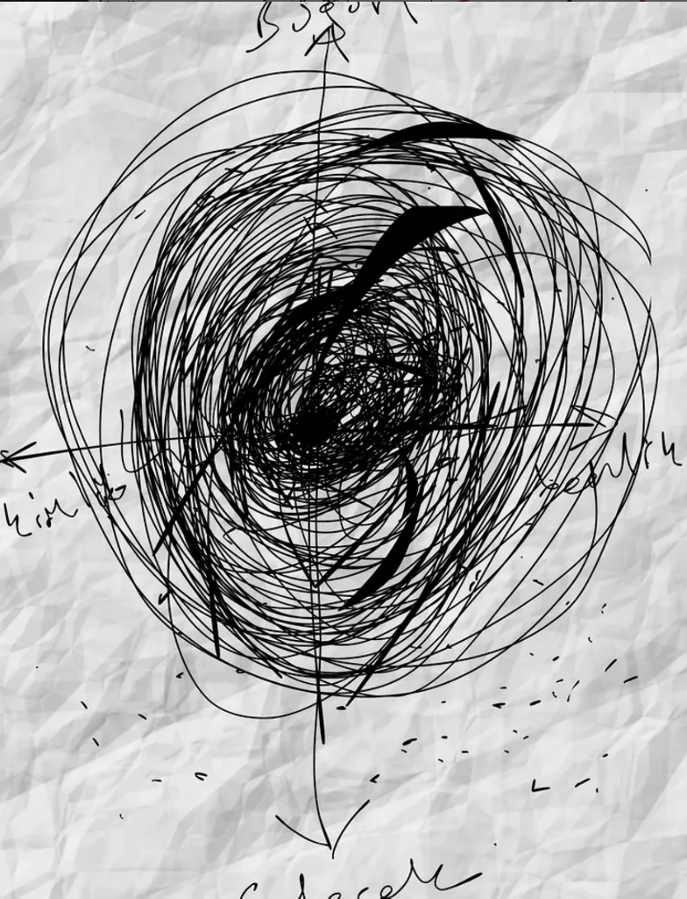
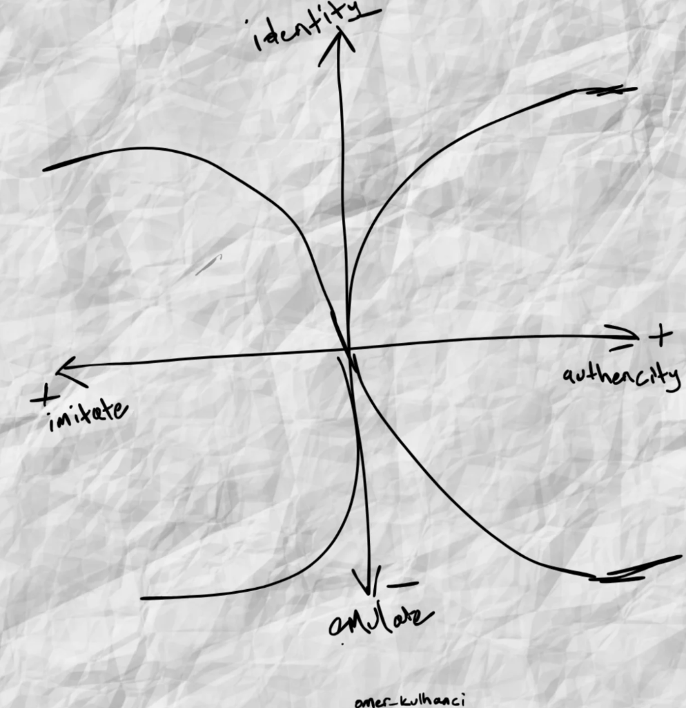
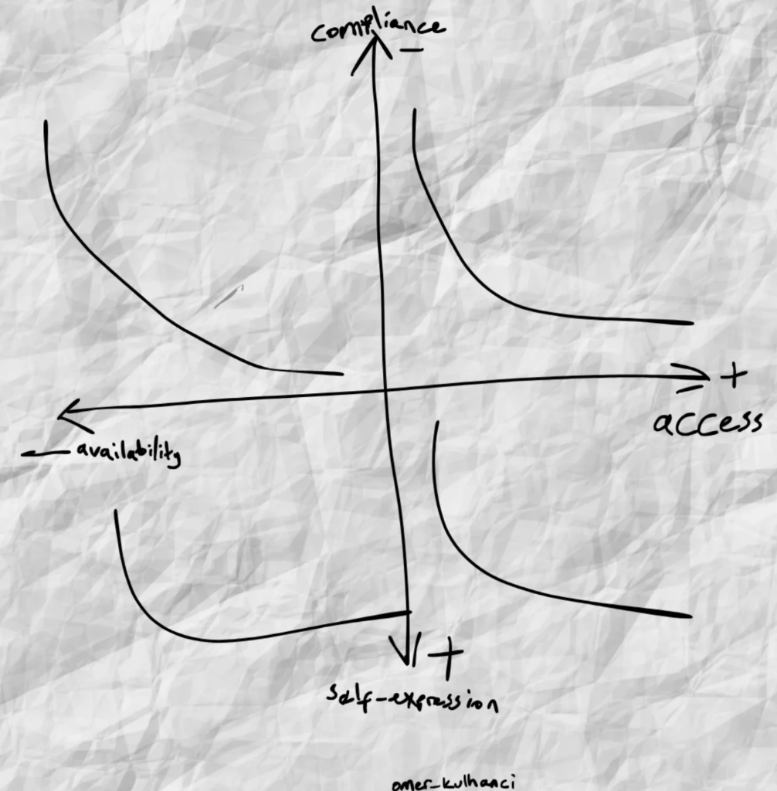

Kaos ve Döngü
Merkezdeki karmaşadan dışa doğru genişleyen boyut, kimlik, benlik ve gelecek kavramları üzerine karalamalar.
Düşüncelerin kağıda döküldüğü, analitik ve sanatsal yaklaşımların kesiştiği noktalar.
Ana Sayfaya Dön (Linktree)
Merkezdeki karmaşadan dışa doğru genişleyen boyut, kimlik, benlik ve gelecek kavramları üzerine karalamalar.

Taklit etmek (imitate) ile özgünlük (authenticity) ekseninde, kimlik inşasının (identity/emulate) eğrisel değişimi.

Sisteme uyum (compliance) ile erişim (access), kullanılabilirlik (availability) ile kendini ifade etme (self-expression) arasındaki analitik ilişki.